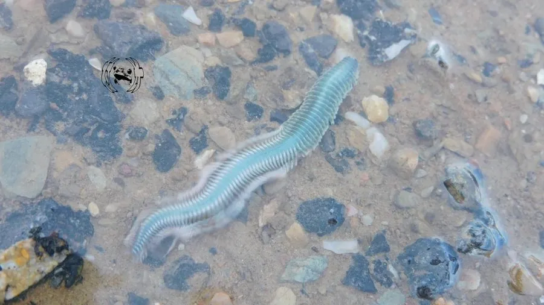

其他无脊椎动物 · 动物界
日本沙蚕 Hediste japonica

生活在潮间带泥沙中的多毛类环节动物，是鱼类和涉禽的天然饵料，也常被用作钓饵，耐污染能力强。
- 分类
- 门环节动物门纲多毛纲目叶须虫目科沙蚕科属沙蚕属
- 栖息环境
- 潮间带和河口的泥沙、泥滩，常见于富有机质的底质
- 地理分布
- 中国沿海、日本和朝鲜半岛的河口滩涂
- 保护级别
- 暂无评估
物种志
日本沙蚕体长 10–20 cm，身体细长分节，每节两侧有一对疣足，疣足上生有刚毛，帮助它在泥沙中穿行。头部有触手和触须，吻可以翻出，吻端带颚齿；体色红褐、绿褐或黄褐色，随环境变化。
它穴居或穿梭于泥沙、贝壳碎屑中，常见于河口和滩涂，耐低氧和污染。食性为杂食与腐食，取食沉积物中的有机碎屑、藻类和小型动物。繁殖期，虫体后部发生变化，成熟个体成群游向水面释放精子和卵子，这一现象称为群浮；受精卵发育成担轮幼虫，浮游一段时间后沉底变态。日本沙蚕分布在中国沿海、日本和朝鲜半岛的河口滩涂，能分解有机质，是鱼类、蟹类和涉禽的食物，也常被采集作钓饵和养殖饵料。
形态与习性
- 食性杂食与腐食，取食沉积物中的有机碎屑和小型动物
- 体长约 10–20 cm
- 形态体节两侧有疣足和刚毛，可翻出带颚的吻
- 繁殖繁殖期游向水面释放配子，幼体浮游后沉底
- 生态作用分解有机质，是鱼类和涉禽的食物
- 经济常用钓饵和养殖饵料，也用于环境监测
趣味知识
- 沙蚕的疣足和刚毛让它能在泥沙中快速穿行。
- 繁殖季节它们会成群游到水面释放精卵，这一现象叫群浮。
- 日本沙蚕耐污染、易采集，常被用作钓鱼活饵。